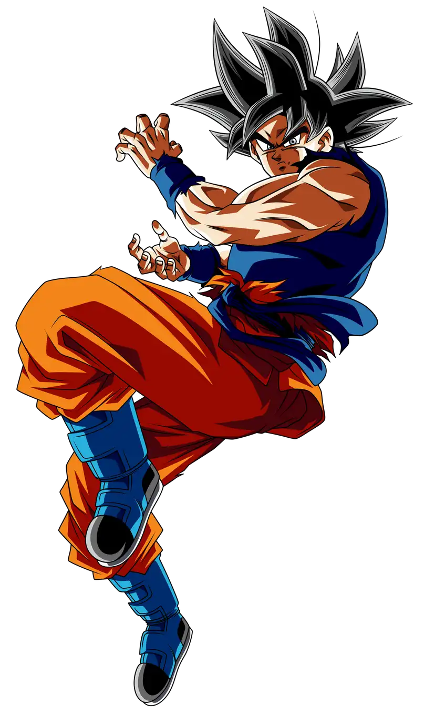

El origen
Una cola, una esfera de cuatro estrellas y un mundo entero por descubrir. La aventura empieza mucho antes del cabello dorado.
BASE → OZARUUN SAIYAJIN. INFINITAS POSIBILIDADES.
De un niño con cola al poder de los dioses.
Explora las transformaciones del guerrero que
nunca deja de superarse.
El siguiente nivel siempre está más allá.

01 / EL ARCHIVO
Cabello dorado. Ki divino. Instinto puro.
Cada transformación cuenta una historia.
Elige una y descubre lo que la hace única.
Prueba con otro nombre o cambia de saga.
02 / EL CAMINO DE UN GUERRERO
No nació siendo el más fuerte.
Se cayó. Entrenó. Volvió a levantarse.
Y cada batalla abrió una nueva puerta.
Una cola, una esfera de cuatro estrellas y un mundo entero por descubrir. La aventura empieza mucho antes del cabello dorado.
BASE → OZARUEn Namek, el dolor se convierte en poder. Nace el Super Saiyan y comienza una búsqueda que llegará hasta el tercer nivel.
KAIOKEN → SUPER SAIYAN 3El ki divino cambia las reglas. Después llega el desafío definitivo: dejar que el cuerpo se mueva antes que el pensamiento.
SUPER SAIYAN GOD → ULTRA INSTINTOEl poder primal del Super Saiyan 4 toma formas distintas. GT y DAIMA exploran sus propias versiones de la leyenda.
DOS VERSIONES DEL SUPER SAIYAN 4Rutas de la historia, sin establecer equivalencias de poder entre series.
03 / MÁS QUE UNA TRANSFORMACIÓN
De la Tierra a Namek. Del Más Allá al Torneo del Poder. Lo que hace especial a Goku siempre ha sido lo mismo: las ganas de ser mejor que ayer.
Este archivo reúne sus formas, técnicas y variantes de Dragon Ball, Z, Super, GT y DAIMA. Las fichas distinguen las versiones del anime, el manga y las historias adicionales.
Encuentra tu transformación favorita